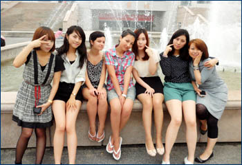
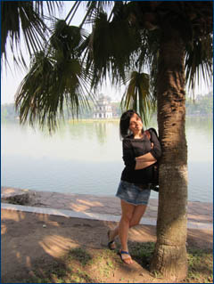
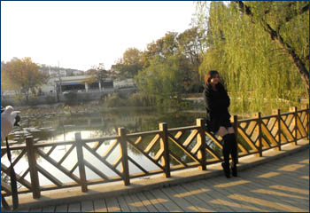
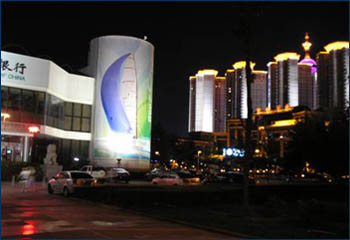
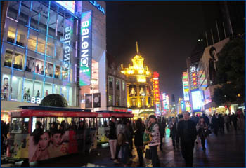

|
Китай – загадочная, богатая традициями восточная
страна
Я
безумно рада шансу оказаться здесь, в Китае! Эта возможность дает
студенту большой опыт... Море положительных впечатлений с самой
первой минуты приезда в Циндао, неустанно и ежедневно.
Об университете. Он очень большой, и
архитектура зданий очень интересная, как и по всему Циндао. За время
пребывания здесь я старалась не пропускать занятий и вникать в особенности
китайского языка. Процесс учебы и режим дня мне очень нравится.
На территории университета есть большой стадион, баскетбольная,
волейбольная, теннисная площадки, а также столы для пинг-понга.
В свободное время студенты могут самостоятельно заниматься спортом.
Для
всех иностранных студентов преподаватели организуют выезд в парк
и на пляж, где проходят разные коллективные игры. Также у нас в
прошлом семестре проходил конкурс караоке (все песни исполняются
исключительно на китайском).
В свободное время вместе с другими студентками я была на экскурсиях
в Циндао. Здесь очень много красивых мест, парков, гор, подводный
мир, дельфинарий, и много еще чего! Побывали в Пекине: Великая Китайская
стена, военный музей, парк развлечений, очень похожий на Дисней
и т.д. Также мы ходили в кино, смотрели китайские фильмы на
китайском языке. Понимание диалогов составило приблизительно 60%.
Везде приходилось общаться с китайцами. От хорошего взаимопонимания
приятно осознавать, насколько я продвинулась в изучении языка.
Все
здесь очень дружелюбны, и у меня здесь очень много друзей и иностранных,
и китайских - пожалуй, даже больше друзей, чем в России. А это означает
больше практики в общении, повышается уровень знаний как английского,
так и китайского языков. В общем, скучать нам не приходится.
Что касается расходов, то студенту предоставляется
комната в общежитии, за которую первоначально вносится залог, стоимостью
в 500 юаней (1 юань примерно равен 3,5 руб.), который
возвращается, когда студент покинет общежитие, при условии, что
комнате не нанесен ущерб. В общежитии 4 подъезда, в первом
живут преподаватели из разных стран (они преподают китайцам), во
втором живут только мальчики, в третьем – только девочки, в четвертом
– вперемешку, три этажа девочек и три этажа мальчиков.
Проезд в автобусе стоит 1–2 юаня. По опыту, студенты здесь
также часто используют такси. В зависимости от пункта назначения,
это стоит 20-30 юаней (до центра 20 юаней).
Само
обучение оплачивать не надо. Но могу сказать, что один семестр стоит
7300 юаней. А вот учебный материал оплачивать нужно – за 200 юаней
в семестр студенту предоставляются все учебные пособия.
Что касается столовой, то это здание в 3 этажа,
большой выбор пищи, но на любителя. Пообедать можно в среднем на
5-10 юаней. Также есть небольшие ресторанчики, если ходить
туда коллективно, то уходит около 20 юаней с человека.
Здесь очень дешевые фрукты. Но в недостатке такие продукты, как
черный чай (здесь он называется красным чаем), масло и сыр. Цены
на эти продукты очень высоки. В центре города есть русский ресторан.
Это для тех, кто соскучится по русской кухне!
Для меня, человека, который никогда не был за границей, здесь
все очень интересно. Я думаю, что ни один студент не пожалеет о
том, что станет студентом по обмену!
Татьяна Прудова, студентка ФМО
Поначалу
было очень сложно, так как на уроках не все понимаешь и после возвращения
домой приходится все заново переводить и выполнять домашнее задание.
Почти все уроки проводились на китайском языке. На английском языке
преподавали только экономику Китая. Все, что мы понимали с самых
первых дней, так это тайцзицюань (китайская физкультура) и шуфа
(каллиграфия). Вот тут-то были мы все молодцы, а один из наших студентов
настолько своеобразно понимал каллиграфию и стиль письма, что он,
можно сказать, открыл новое направление в китайской каллиграфии.
Большие учебные корпуса, множество общежитий розового цвета и
студенты, играющие в футбол, большой теннис, волейбол – такая атмосфера
создалась задолго до нашего приезда. Несколько теннисных кортов,
большое футбольное поле и волейбольные площадки просто вызывали
желание играть и заниматься спортом, тем более что все это происходит
на фоне гор, которые возвышаются неподалеку.
В первый же месяц иностранным студентам организовали поездку в
парк города Циндао, находившийся за чертой города. Автобус, полный
студентов из Кореи, Германии, Америки, ехал до парка всего минут
40, но за это время мы познакомились друг с другом, подружились,
даже пели песни во время поездки. Вообще, следует отметить, что
иностранцы, обучающиеся в Ke Da, никогда не были вне внимания университета.
Всегда были экскурсии, соревнования, конкурсы. Эта атмосфера настолько
сплотила нас, что до сих пор мы созваниваемся, общаемся по Интернету
и даже встречаемся.
Все, что мы пережили в Китае, те дни и то замечательное время,
я храню глубоко в душе. Циндао и его жители стали частью моей жизни.
Татьяна Смольянинова, студентка ФМО
Как я побывал в Китае
Будучи студентом 5-го курса факультета международных отношений, мне представилась уникальная возможность уже во второй раз посетить страну с тысячелетней историей и культурой – Китай.
Договор между Воронежским государственным университетом и Научно-Технологическим Университетом г. Циндао существует уже на протяжении многих лет, и с каждым годом связь становится все крепче.
В геометрической прогрессии растет количество желающих изучать китайский язык по всему миру, но не всем выпадает прекрасная возможность подкрепить знания, полученные в России, поездкой в Китай. Китайский язык, как никакой другой язык в мире, необходимо осваивать неразрывно с его средой. Это обуславливается, прежде всего, тем, что китайский язык является тональным. И для нас, европейцев, в диковинку слышать помимо интонации предложения, интонацию самих слов. Такая же сложность есть и в произношении этой самой интонации, и было немало очень смешных историй, связанных с этой особенностью языка.
А теперь я хочу рассказать о своем опыте пребывания в Китае и о программе обучения.
Путь до Китая неблизкий, поэтому всем тем, кто собирается туда, предстоит запастись терпением и выдержкой на все время путешествия. Добравшись до Пекина, сразу же ощущаешь себя пришельцем, который посещает совершенно другую планету, везде начинают мелькать иероглифы, незнакомая речь и толпы людей проносятся мимо тебя. С первых же минут начинаешь испытывать не себе бремя иностранца. Поднебесная относительно недавно открыла двери для всех желающих посетить её, поэтому все еще приходится сталкиваться с любопытными взглядами китайцев на лаоваев (слово «иностранец» по-китайски). Но прибыв на место в г. Цинадо, и добравшись до нашего студенческого городка, сразу начинаешь ощущать себя как дома.
В кэмпусе есть все для нормальной жизни китайских и иностранных студентов: общежитие, столовая, футбольный стадион, множество других игровых площадок, библиотека. Расселяют нас в общежитии, где, в отличии от типично китайского общежития для иностранца выделяется одна комната на человека со всеми удобствами: электрический чайник, телевизор, интернет (куда же без него), холодильник. А вот стиральные машинки находятся в комнате у вахтерши, где можно (даже нужно) купить карточки на стирку. К карточной системе относится и интернет.
Итак, нас заселили в общежитие, где помимо нас пребывают студенты из других стран: Казахстана, Украины, Пакистана, Ю. Кореи, Вьетнама, Великобритании, Бразилии, Монголии, США, Германии, Малайзии, Австралии. Но по сути говоря, доминирующим большинством были пакистанцы, корейцы и вьетнамцы. Студенты из остальных стран были представлены практически в единичном экземпляре, за исключением Казахстана. Именно в Китае мне представилась возможность пообщаться с представителями разных культур и религий, и почувствовать себя, в какой-то степени космополитом.
Первый, и, пожалуй, главный вопрос, который возникает, когда все тюки, чемоданы и рюкзаки доставлены до нужного этажа и бережно разложены в беспорядке по комнате, – что есть? В смысле – чем питаться. В студенческом городке есть здание столовой, или «Сердце Кэмпуса», «главная Артерия», как я потом его называл. Это трёхэтажное здание, размеры которого скорее подходили бы для целого учебного корпуса, но никак не для столовой. В ассортименте обнаружилось много разнообразных блюд, но, несмотря на это изобилие, не всё пришлось по вкусу избалованным маминой едой студентам. Однако спустя совсем недолгое время было найдено и включено в категорию «без этого я не смогу прожить и дня» очень много блюд.
Занятия в китайском университете в сезон с сентябрь по январь начинаются с 1 сентября, а в сезон с март по июль – с 1 марта. Студентов разбивают на группы, в зависимости от их уровня китайского языка. Всего существуют 4 группы – нулевая, начальный уровень, средний и высший. Занятия проходят с понедельника по пятницу, каждый день, с 8-00 до 12-00. После этих занятий – факультативные занятия, часть которых предусмотрена самой программой – история, культура Китая, другие предоставляет университет – китайская гимнастика, каллиграфия, китайские народные песни, китайское вязание. Дополнительные предметы нам преподавали китайцы со знанием русского языка, это – история и культура Китая.
В середине и в конце семестра проходят экзамены по четырем дисциплинам: грамматика, аудирование, чтение и разговорная речь. Система очень хорошая и позволяет оценивать знания на протяжении всего семестра. Преподаватели основных дисциплин говорят и объясняют материал только на китайском языке, а в нулевых группах иногда используют английский язык. На начальном этапе это вызывает некоторые трудности, но в дальнейшем становится легче. А иногда случается обратное. В частности, это зависит от самой группы, в которую ты попадаешь, от уровня общей подготовки и от количества человек в группе. Иногда объяснение более сложного материала на китайском языке вызывало некоторые трудности в понимании.
На этот случай в изучении языка помогают китайцы. Познакомится с ними очень просто. Достаточно пары общих фраз, и у тебя уже есть свой внеклассный учитель. Однако, тут стоит помнить, что китайцы так же знакомятся с тобой не всегда ради интереса, но и для обучения тоже. Если они услышат от тебя хотя бы пару фраз на английском языке, то можно выключать свой мобильный телефон, забивать дверь досками и залезать под кровать. То упорство и та частота, с которой они будут просить позаниматься с ними английским языком, посетить непонятные мероприятия для иностранцев, вынудят тебя совершить подобные действия. Но встречаются и совершенно нормальные китайцы, с которыми будет дружба ради дружбы, и могу заверить, что на них можно положиться на все 100% в любое время дня и ночи. Если что-то произойдет, они обязательно помогут.
По выходным или в будние дни, в свободное от учебы время мы часто выбирались в центр Нового и Старого города. Это неофициальное разграничение города на «немецкую» (историческую) часть и новые районы.
От кэмпуса практически через весь город ходит автобус (№ 321), проезд дешевый – всего 1 юань, но для тех, кому хочется скорости, экстрима и незабываемых ощущений, – существует государственное такси. Оно, конечно же, стоит дороже, но если ездить коллективно, то получается вполне приемлемо. Кроме самостоятельных путешествий, университет организовывает коллективный поход для всех иностранных студентов в парки или, как это было в этот раз, на Лаошань (одна из пяти священных гор Китая). Вместе со студентами едут и преподаватели, чтобы поближе познакомится и контролировать процесс. Но, как правило, до этой поездки все студенты уже давно знакомы и успевают начать общаться достаточно близко.
От этой поездки у меня остались лишь самые теплые и самые позитивные воспоминания, много друзей, хороших знакомых.
Евгений Акимов
Осенний семестр стал третьим сроком моего обучения в Университете Науки и Технологий города Циндао. Пребывание в Китае несомненно повысило мой уровень знания языка, увеличило словарный запас. Последний семестр я обучалась в высший втором классе, который является пятым их шести классов обучения китайскому языку. Объем получаемой информации и необходимых к запоминанию иероглифов был значительно больше, даже по сравнению с предыдущим классом, что требовало гораздо больше времени и внимания при изучении и подготовке домашнего задания.
От моих друзей китайцев я узнала, что написание иероглифов считается самой сложной частью изучения китайского языка не только для иностранцев, но и для самих китайцев. В течение всей своей жизни они постоянно узнают новые иероглифы, и могут забыть написание тех из них, которые редко употребляются.
В прошлом учебном семестре я сдала HSK (высококвалифицированный экзамен на знание китайского языка среди иностранцев) 4 уровень из 6. На протяжение осеннего семестра я готовилась к сдаче HSK 5 уровень, в конце декабря я сдала HSK 5 уровень, надеюсь результаты будут положительными.

В конце декабря нам необходимо было сдать экзамены. В список экзаменов входили только экзамены по китайскому языку, но и они требовали много времени и сил для подготовки. Параллельно со мной мои китайские друзья сдавали свои экзамены по профессии. Если сравнивать подготовку к экзаменам европейцев и русских, с одной стороны, и китайцев, с другой, то модно отметить, что китайцы тратят намного больше времени на повторение. За месяц до сдачи экзаменов они начинают заниматься с утра до вечера, без выходных. Самую большую трудность в изучении для китайцев представляет английский язык и европейские языки в целом. Поэтому уже начиная с возраста 3х–4х лет во всех детских садах введена система обучения английскому языку.

Кроме китайского языка проводились также дополнительные лекции для студентов изучающих мировую экономику или международные отношения по мировой экономике, отдельно экономике КНР и международным связям в Азии.
Учитывая тот факт, что в моем классе из 15 человек 13 были представители Южной Кореи, я проводила очень много времени с ними, практикуя язык (как китайский, так и корейский). Это позволило мне ознакомиться с их культурой, традициями (а они очень сильны в корейском обществе), а также побудило во мне желание изучать параллельно корейский язык.
Несмотря на то, что среди иностранцев существует мнение будто бы китайцы и корейцы абсолютно одинаковы и большой разницы в их культуре не существует, общение с ними показывает обратное. Представители Южной Кореи – полная противоположность представителям Китая. Это проявляется во всем, начиная от отношения к людям, религии и традициям принятым в обществе и заканчивая манерой одеваться, готовить еду и разговаривать.
Кроме представителей Южной Кореи я сдружилась с представителями Казахстана, Узбекистана, Пакистана, Украины, Японии, Индии, Великобритании, Франции, Америки, Канады, Австралии, Южной Африки, Кении, Танзании и других стран. Все это способствовало моей практике не только китайского и корейского, но и английского и французского языков, которые являются для меня основными языками на факультете. Более того, сведения из книг, Интернета, никогда не помогут узнать тебе о стране столько, сколько поможет узнать хотя бы один час разговора с представителем конкретной страны. Я необыкновенно рада, что Китай предоставил мне такую возможность практики сразу нескольких языков и обогащении моего запаса знаний относительно вышеперечисленных стран.

Ноябрьские каникулы мы с друзьями из Южной Кореи и Китая провели во Вьетнаме. Это путешествие позволило мне осознать, что каждая страна Азии представляет собой нечто необыкновенное, ни на что не похожее государство со своими традициями, культурой и отношением к иностранцам. Достаточно большое количество вьетнамцев может говорить на русском языке, хотя бы несколько фраз, и достаточное количество понимает русский язык, но не может говорить.
В этот раз мне также посчастливилось попасть на празднование Нового года по китайскому календарю. Как известно, дата Нового года в Китае меняется каждый год, в этот раз торжество состоялось в ночь с 23-го января на 24-е января. Новый 2012 год считается большим событием, так как он проходит под знаком Дракона, главного мифологического образа Китая. Считается, что дети, рожденные под знаком Священного Дракона, непременно будут счастливыми.
Поводя итог можно сказать, что обучение в Технологическом университете города Циндао не только способствовал улучшению моих знаний китайского языка, дал мне знания в области китайской культуры и культуры других стран, необходимые студенту, изучающему международные отношения, и, также, усилил во мне желание к дальнейшему изучению языков, но и помог мне обрести друзей со всех концов света.
Виталина Чернышова, студентка 5 курса ФМО
Во втором семестре прошлого учебного года я обучалась в Научно-технологическом университете города Циндао в Китае. Университет расположен между морем и горами в районе Лаошань, общежитие находится в пяти минутах от учебных корпусов и спортивных площадок, что очень удобно. Занятия по китайскому языку проходили каждый день кроме выходных с 8 утра до 12 дня. Затем мы шли обедать в столовую, которая расположена совсем рядом с корпусом. Там можно очень недорого и вкусно поесть. Найдутся блюда на любой вкус, только необходимо иногда уточнять насчёт остроты. Вообще еда в Китае всегда свежая: фрукты, овощи, молочная продукция и т.д. Студенты раскупают всё во время перерыва (мы заметили, что китайцы постоянно перекусывают на ходу, причём это может быть и лепёшка с начинкой, и китайские манты или, что более популярно для девушек, соевое молоко, соевый сыр и другое).
Обучение проходило, в основном, на китайском, а также на английском языках. Мы проходили 4 аспекта китайского языка, а также могли посещать лекции на китайском по маркетингу и менеджменту. Иностранным студентам наряду с дневными занятиями предлагалось выбрать курсы каллиграфии (правильное начертание иероглифов), рисования, тхэквондо или китайской гимнастики. Многие после обеда занимались спортом: играли в баскетбол, волейбол, футбол, теннис. В свободное время мы делали домашнее задание вместе с новыми друзьями из университета, помогали многим китайцам, изучающим русский язык, готовились к тестам и диктантам. Преподаватели относились к нам и остальным иностранным студентам по обмену с вниманием, старались помочь, объяснить, если что-то не понятно.
Посетив другие города Китая, можно заметить различие в культуре, менталитете и, конечно, акценте. Что интересно, сами китайцы не говорят на putonghua, который изучается всеми иностранцами, однако, понимают его практически во всех провинциях. А зачастую бывает и такое, что китайцы не понимают друг друга, будучи родом из разных концов страны. Во время путешествий по Китаю, я сравнивала жизнь многих людей – работающих и учащихся там иностранцев и самих китайцев. Китайский народ дружелюбно относится к иностранцам, в особенности им приятно то, что многие изучают их родной язык и знают факты их истории и культуры!


Благодаря стажировке я не только улучшила знание китайского, изучая его и общаясь со студентами, но и нашла много друзей, попутешествовала – в общем, с пользой провела время. По-моему, всем изучающим китайский следовало бы поучиться в Китае!
Ольга Ковыршина, студентка 5 курса ФМО
Студентам, обучающимся в Воронежском государственном университете, предоставляется множество уникальных возможностей участвовать в программах международного обмена.
Будучи студенткой 4 курса, я приняла участие в программе обмена с Научно-Технологическим Университетом Циндао в Китае.
Обучение в университете проходило по 4 аспектам китайского языка: слушанию, говорению, чтению и грамматике. Дополнительно студенты могли посещать занятия по тхэквондо и китайской каллиграфии, где под руководством преподавателя осваивали написание китайских иероглифов. Особое внимание хочется уделить внимательному отношению преподавателей к иностранным студентам. Они всегда старались сделать занятие интересным и легким для восприятия. Очень часто во внеурочное время мы собирались вместе в аудитории и смотрели фильмы на китайском языке. Также при возникновении каких-либо вопросов и проблем с китайским языком можно было всегда обратиться за помощью к китайским студентам, которые всегда были рады помочь.
Занятия по китайскому языку проходили в небольших группах, где обучались студенты из самых разных стран – Ю. Кореи, Японии, Пакистана, Монголии, Польши. Это позволило узнать много нового и интересного об обычаях, традициях, праздниках, еде различных культур. Обучаясь в такой многонациональной среде, начинаешь по-другому думать и воспринимать многие вещи. Особенно запомнились последние занятия в университете, на которых все студенты представляли презентации на китайском языке о своих странах.
В конце декабря всех иностранных студентов ожидали экзамены по всем дисциплинам китайского языка, результаты которых явились хорошим показателем прогресса в языке.
Всем студентам университета, изучающим китайский язык и увлекающимся историей и культурой Китая, я настоятельно рекомендую принять участие в программе обмена с Научно-Технологическим Университетом Циндао. Вы получите незабываемый и бесценный опыт.
Виктория Князевич, студентка ФМО
Будучи студентом 4-го курса факультета международных отношений, мне представилась уникальная возможность пройти языковое семестровое обучение в Китае, стране с древней и уникальной культурой и историей. В Китае я уже не первый раз, обучаясь на 3-ем курсе я уже побывал в Циндао, поэтому мне не пришлось снова привыкать к непривычной обстановке.
С каждым годом в мире растет число желающих изучать китайский язык. А где, как не в самом Китае, могут быть созданы самые лучшие условия для этого. Многих отталкивает кажущаяся сложность китайского, однако, хочу сказать, что при должном старании и правильном подходе его можно будет освоить в довольно короткие сроки и знать не хуже английского, который у нас изучают, чуть ли не с детского сада. Главное верить в себя и не бояться трудностей!
Только прибыв в Китай, будет немного неуютно из-за всех этих вывесок с непонятными иероглифами и китайской речи, звучащей со всех сторон, но, спустя какое-то время, привыкаешь к подобной обстановке. Но, пожалуй, единственная вещь, привыкание к которой потребует много времени – пристальное внимание и огромной интерес к собственной персоне со стороны китайцев. Так уж получилось, что в Циндао очень мало иностранцев из Европы и Америки, поэтому все белокожие люди вызывают восторг и любопытство у жителей Поднебесной. Они так и пытаются подойти и поговорить или даже хоть слега прикоснуться к тебе. Настолько мы в диковинку для китайцев.
Ребята, которые летели со мной, были в Китае первый раз, и многое для них сразу же оказалось не совсем привычным, но я помог им разобраться с обстановкой на месте. В основном, конечно, переживали, что добравшись до Китая не получалось позвонить родным в Россию, но эту проблему удалось решить уже в общаге с помощью скайпа.
Едва добравшись до учебного кампуса, трудно поверить своим глазам. По размерам он больше походит на какой-то отдельный микрорайон любого нашего города, чем на учебный кампус. Внутри есть все: корпуса, где проходит обучение, огромная библиотека, спортивные площадки для игры в футбол, баскетбол, продуктовые магазины, парикмахерские и, конечно же, столовая. Лично у меня это здание вызвало наибольшее удивление: постройка в три этажа, которая по размерам сопоставима с учебным корпусом, в котором я обучаюсь в ВГУ.
Надо заметить, что условия проживания для китайцев и иностранцев отличаются довольно разительно. В нашем общежитии для каждого студента выделяется отдельная комната, в которой есть собственный телевизор, чайник с холодильником, письменный стол и кровать. Стиральной машины нет, комната с ними расположена на первом этаже общежития. Карточка на стирку покупается там же у вахтерши, или как её называли мы, аишки (от кит. Aiyi, обращение к женщине старшего возраста). В общежитии помимо нас проживали студенты из других стран: Казахстана, Украины, Пакистана, Ю. Кореи, Монголии, США, Германии, Узбекистана, Индонезии, Японии, Польши. Проживая и обучаясь в такой многонациональной среде, мне удалось соприкоснуться с множеством различных культур и религий, что, на мой взгляд, является бесценным и интересным опытом.
Занятия у нас начались с 3 сентября и закончились в последних числах декабря. Каждый год занятия начинаются в разное время, связано все это с китайским Новым годом, которые каждый раз празднуется в разное время. Приехали мы пораньше, так как ребята немного боялись незнакомой обстановки и хотели вначале немного освоиться в незнакомой среде. Все студенты перед началом занятий проходили мини-собеседование, в процессе которого определяется уровень владения языком. Всего таких уровней 4, в прошлом году я обучался на третьей ступени, в этом году перешел уже на 4, последнюю. На следующий день после собеседования мы все купили комплект учебников за 200 юаней и получили расписание занятий. Проходят они всего 5 дней в неделю с 8.00 утра до 12.00 дня. Так, каждый день в моей группе была одна пара грамматики и чередование аудирования, говорения и чтения. Занятия проходили не только на китайском языке и лишь иногда преподаватели объясняли что-то на английском. Однако порой самостоятельно справиться с учебным материалом вызывало у меня некоторые трудности, но в этом случае мне помогали мои китайские друзья. С некоторыми из них я познакомился еще в Воронеже, это те ребята, которые изучают русский язык и потом также приезжают в наш университет учиться по обмену, с другими же я познакомился уже непосредственно в Китае.
В свободное от занятий время есть множество вещей, которыми можно заняться: различные виды спорта вроде футбола, баскетбола, тенниса, волейбола…походы в кино, кафе, парки, рестораны, различные музеи и выставки, караоке-бары, бильярд или ночные клубы. Помимо этого самим университетом проводились занятия по каллиграфии и тайцзи, специальной гимнастике для укрепления здоровья, записаться на которые может каждый желающий.
Также стоит упомянуть об экскурсиях, которые проводит университет. Так, все желающие студенты могли посетить музей Циндао, который широко иллюстрирует историю города, а также вместе с преподавателями поучаствовать в праздновании одного и традиционных китайских фестивалей.
Для передвижений по городу можно воспользоваться общественным транспортом, благо цена его всего 1 юань (5 рублей) за проезд. Прямо за нашим общежитием расположена автобусная остановка, на которой можно сесть на автобус, который проезжает практически через весь город. Но будьте готовы к тому, что скорость автобуса не будет подниматься выше 30 км/ч, и автобус уже на следующей остановке будет забит битком студентами – народу учится много, Китай все-таки. Тем, кто спешит куда-то, не стоит забывать про такси. Всего за 30–40 юаней можно добраться до любой части города максимум за 40 минут. Однако это не распространяется на час пик, когда люди заканчивают работу и учебу и спешат домой.
Настоятельно советую всем студентам, которые изучают китайский язык в нашем университете, поучаствовать в программе обмена! Эта поездка подарила мне море незабываемых впечатлений, новых друзей, познакомила с культурой и бытом Китая, помогла поднять уровень владения китайским языком на новый уровень. Настоятельно советую всем студентам, которые изучают китайский язык в нашем университете, поучаствовать в программе обмена.
Антон Кузин, студент ФМО
|